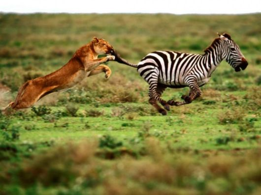
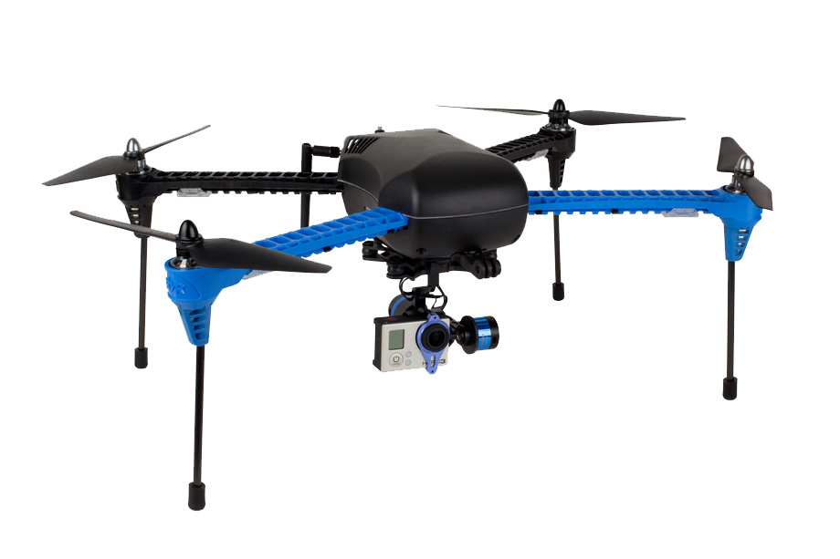

Research
My research field is genetic algorithms, an area of Artificial Intelligence in which we create algorithms that "evolve" solutions to computationally expensive problems. A genetic algorithm is a computational corollary to Darwinian evolution. A population of candidate solutions to a problem are recombined and mutated, all at random, to create increasingly better solutions over a number of generations. The video below (by Matthew Miller via youtube) provides a visual example of a genetic algorithm. In this case, the algorithm creates an approximation of the Mona Lisa by randomly placing circles created with random size and color. The purpose of the video is to demonstrate the power of genetic algorithms not to provide a real-world example of how they are used. It's worth noting that the video is time-compressed -- the actual computation took approximately a week.
The whole thing works due to an objective function, a mechanism for evaluating the fitness of an individual (candidate solution). As in biological evolution's survival of the fittest, fitter individuals are more likely to survive, allowing them to reproduce and/or mutate, while less fit individuals are more likely to be eaten by a lion. 
My recent work has focused on using genetic algorithms to do path planning for autonomous vehicles, namely micro aerial vehicles, popularly known as drones. Not only is this an interesting problem but it also allows my students and I to play with quadcopters which is, frankly, a lot of fun. Pictured below is a 3DR Iris+ like those we fly. We have incorporated an Odroid XU4 single-board computer allowing all necessary computation to be done onboard the vehicle, making it autonomous. 